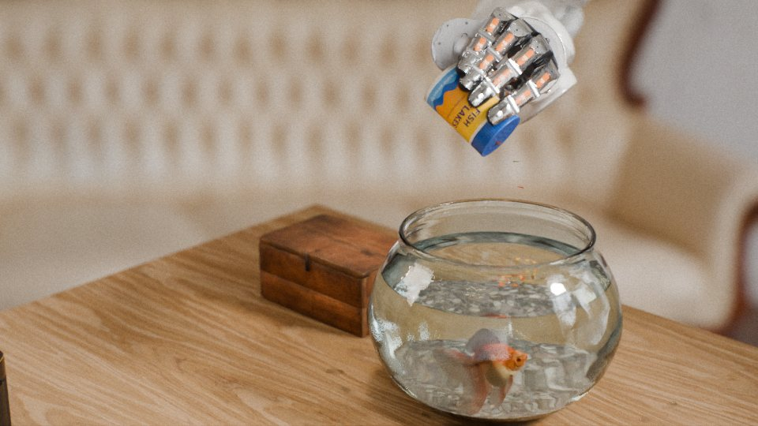

dashboard · all 50 tasks: trials and success rate · this task in the gallery · generated 2026-11-26 08:22 EST by python s2/s2loop/daily50_trials_page.py

Shake some fish food into the fish bowl.
the instruction S2 was given, read from the trial record (instruction)
FAIL best of 1 trial(s); 0 passed. First attempt (trial 116): FAIL. Not passed in any attempt so far. Played by session agents, probe series — not a counted test series.
written 2026-11-26 07:21 · attempt 1 · played without this task's notes · episode index 116 · 6 turns (4 plan, 1 look, 1 act) · 1624 ticks of 2250 used by the turns · run 20261126T120547Z-3c2e4f10 · session daily50_t25-282936c7
No replan in this trial.
| turn | phase | skill | what S2 said it does and why | reply | ticks |
|---|---|---|---|---|---|
| 1 | LOOK | get_task_context + | list the numbered things and ask grasps for the small ones (nothing moves) | ok | at 0no motion |
| 2 | PLAN | propose_grasps + | synthesized policy grasp of the shaker (mask part on the box), sweep carry-tilt-shake over the bowl and put-back through check_plan (nothing moves) | not okexecution_failed | at 0no motion |
| 3 | PLAN | propose_grasps + | synthesized policy grasp of the shaker (mask part on the box), sweep carry-tilt-shake over the bowl and put-back through check_plan (nothing moves) | ok | at 0no motion |
| 4 | PLAN | attach x13 + | find why the tilted carry is refused (level rows as quaternions, put-back height), then sweep tilt direction and height with grasp 1 (nothing moves) | ok | at 0no motion |
| 5 | PLAN | attach x8 + | the inverted hand met the bowl 14 to 20 cm over its rim; sweep higher tilt poses and smaller tilts (nothing moves), fallback a hold over the bowl | ok | at 0no motion |
| 6 | ACT | commit_plan | commit the checked plan (attach shaker, carry over the bowl, tilt 100 degrees cap toward +y and shake twice, back upright onto the box, detach, reach to the start pose), plan steps 1 to 5 | not okgrasp_slip | 0–162432.5 s |
Ticks: the tick range the turn moved the robot over (one tick is 20 ms). ▶ m:ss under a turn number is where that turn starts in the video; click a row to go there.
| skill | ok | the skill's own verification (head camera, joint and servo effort) | what the record showed afterwards |
|---|---|---|---|
| commit_plan | not ok | passed false | — |
NOTES.md)# t25_fish_food notes (append-only: one dated line per lesson, only what the head camera and the skill replies showed)
- 2026-11-26 07:20 (t25_fish_food, attempt 1, FAIL): The shaker stands on a 7 cm box: recorded clips answer rest_pose_mismatch, only propose_grasps(view, its mask part, synthesized=True) gives grasps (3 palm yaws, one donor clip); the one with psi -90 passed attach + level carry over the bowl + put-back on the box (776 to 833 ticks).
- 2026-11-26 07:20 (t25_fish_food, attempt 1, FAIL): Tilting the top-grasped shaker over the bowl: 135 and 110 degrees at 14 cm over the rim were refused (held thing 3 to 5 mm from the bowl), at 20 cm fingers or arm link 7 met the scene, at 26 cm IK ended at joint 7; only 100 degrees with the cap toward +y at 20 cm over the rim was accepted (1511 ticks, carry 1127).
- 2026-11-26 07:20 (t25_fish_food, attempt 1, FAIL): The synthesized grip did not last: grip loaded in 13 of 47 samples, load gone from row 504 (about 6 s into the carry), the tilt and the shake ran with an empty hand and the shaker ended lying on the table between bowl and box; keep the loaded path short (no 20 cm lift, no repeated shake rows) or bring the bowl-side geometry closer first.
- 2026-11-26 07:20 (t25_fish_food, attempt 1, FAIL): One commit of 1624 ticks left 626 of 2250: there is no second try on this task, so the first plan must be the short one.
- 2026-11-26 07:21 (t25_fish_food, attempt 1, FAIL): Own record after close: the shaker already leaned 25 degrees in the synthesized grip while the hand still stood at the box, 37 to 45 degrees during the 24 cm lift, and flew out of the hand at the top of the lift as the carry turned toward the bowl (about tick 610, 4 s after leaving the box); it never reached the bowl and gave out nothing. Keep the lift under 10 cm and look at the lean before any long carry.
- 2026-11-26 08:18 (t25_fish_food): HOST NOTE THAT SUPERSEDES EARLIER LINES OF THIS FILE (from the developer-side reading of the records; read this before the lines above). All lines above are of attempt 1 (release r2e, one commit of 1624 ticks). Ticks below are ticks of that run's own record; a row of the commit's reply is the tick minus 113 (its grip_lost_row 504 is tick 617; the record's last finger contact is tick 611). (a) "Keep the lift under 10 cm", "keep the loaded path short (no 20 cm lift ...)" and "flew out of the hand at the top of the lift as the carry turned toward the bowl (about tick 610, 4 s after leaving the box)": the lean numbers of those lines are right, the cause and the lesson are not. The tub left the box at tick 280 and the hand at tick 612, 6.6 s later (3.8 s after the palm began the lift), straight above the box: the palm had moved 22 mm sideways, was rising at 0.09 m/s within 1 mm of its path, and the planned turn of the thing at that row was 1.4 degrees. So it was not the turn toward the bowl and not the height. The grip was going from the grasp on: the tub leaned 18 degrees 0.74 s after the firm command with the palm standing, and 25.7 degrees at tick 420, before the lift began, 37 mm above the box; meanwhile the thumb tip slid down the tub and the index and middle fingertips climbed it (the index tip at the cap's edge at tick 520, over the cap at tick 600), and the tub was squeezed out downward. A shorter lift would not have kept it. The usable half of the line stands: look at the lean after the attach, before any carry. What to read there: a lean in the first second is not by itself the sign (the same grasp preset on a 50 mm shaker in another run of the same morning leaned 18 to 24 degrees in its first second, then settled, leaned less at 6.5 s than at 2 s, and was kept 21 s through a turn of 127 degrees); a lean that still grows 2 s after the grasp is (here 24 degrees at 2.2 s and 44 at 6.2 s after the firm command). (b) "recorded clips answer rest_pose_mismatch, only propose_grasps(view, its mask part, synthesized=True) gives grasps": true on r2e, and it is a harness defect, not a property of the tub. The reply said it itself: "no clip of 'cylD45H70_local_mocap' has its object resting 140 mm tall (the clips rest at 70 mm)", seen_height_m 0.14. The grasp side counted the height from the table top, box included, where the part's own size[2] was 70 mm, the height of the clip's tub (the briefing's r2e block has this as NOT YET in r2e). So the tub's own recorded pick was set aside before any planning, and whether the arm can follow it on the box is not known: the planner was never given it. Next attempt: first ask propose_grasps(view, <the tub's mask part>) WITHOUT synthesized and read seen_height_m and the error sentence. Still 140 mm: the defect is in your release and the synthesized grasp is the only one to be had; say so in the close. If grasps come back whose clip_source is not synthesized, that is the recorded pick, another grasp than the one attempt 1 flew. (c) "the one with psi -90 passed attach + level carry over the bowl + put-back on the box": "passed" there is check_plan at zero ticks. It says that the arm can follow the rows; it says nothing about the grip. The offer said what kind of grasp it was: preset top_of_tall, trained False, pose_basis "untrained_for_class ..." (that sentence is the preset's fixed text, not a result of planning in this scene), dwell_s 0.0, firm_after_s 0.4. What the record shows of the grasp: with dwell 0 the wrist began to rise at the row after it had arrived, and at that row no fingertip was on the tub (the five fingertip ends 13 to 28 mm from its surface: the policy closes slowly while the reference rests). The first finger touched 3 ticks into the rise; the tub left the box with the palm already 13 mm above its lowest row, on the thumb tip with about 1 N and three lighter contacts (0.2 to 0.6 N), the thumb tip 7 to 11 mm higher on the tub than the fingertips opposite it. Firm came 8 ticks later with the lean at 4 degrees; the 18 degrees of (a) followed in 0.74 s. (The 50 mm shaker of (a) left its support 2 mm into the rise with the fingertips within 6 mm of each other in height.) No grasp of this tub on its box has been kept on any record. Things of the tools that exist and that NOBODY has tried on it: a wait at the grasp pose before the first rising row, propose_grasps(view, <part>, synthesized={"dwell_s": 0.4}) (a mapping in place of True; 0 to 3 s; the offer says dwell_s back); attach(<part>, grasp=g, hold="s0"); firm_after_s=1.0. Only one comparison of one run each, on tubs of different width, points to the wait, and it may not be enough. Change ONE thing against attempt 1 and keep the rest; after close read in your own record and write into these notes, whatever the outcome: the tick of the first fingertip load against the first rising row (attempt 1: 3 ticks after it), how far the palm had risen when the tub left the box (13 mm), the thumb tip against the opposite fingertips at that tick (7 to 11 mm higher), and the lean 2 s and 6 s after the firm command (24 and 44 degrees). (d) "135 and 110 degrees at 14 cm over the rim were refused (held thing 3 to 5 mm from the bowl), at 20 cm fingers or arm link 7 met the scene ...; only 100 degrees with the cap toward +y at 20 cm over the rim was accepted": the refusals are as quoted, but their cause is not the tilt, not the height and not the hand over the bowl. The carry held two waypoints at ONE point, upright and turned, and a spline carry does not fly that as a turn in place: the thing swings away from the point and back, 13 cm for a turn of 100 degrees, 14 cm for 110, 17 to 18 cm for 135, most of it downward, at any height [recomputed offline with the release's own carry builder from the player's waypoints of that session; it reproduces the 1127 rows of the committed carry; nothing flown]. At 14 cm over the rim that swing took the believed held thing 3 to 7 cm BELOW the height of the rim; all 15 clearance refusals of the last two sweeps lie at rows inside the swing. check_plan names only the nearest link and the bowl; it does not say that the row lies off your waypoints. Next attempt: give the turn a carry of its own (it starts at the point with the thing upright and has ONE waypoint: the same point, the new orientation): compiled so, the thing does not leave the point at 100, 110 or 135 degrees (164 to 221 rows). Or interpolation='linear' on the same waypoints (within 4.4 mm of the point). Then check the height and the turn you wanted in the first place, before any sweep: 100 degrees at 20 cm was only what the swing left over, not a finding about this bowl. Not settled: whether the IK refusals at 26 cm were the swing's too; the 25 turned checks of the first sweep were not recomputed. And no turned carry has been flown with this tub in the hand. (e) "no repeated shake rows" (as a way to keep the grip): the record says nothing about up-down rows and the grip. The tub was gone at tick 612; the up-down rows began at tick 857 and ran in an empty hand. What the record does show is what carry made of them: a spline carry runs on one time law from rest to rest, at 0.25 m/s at most; it takes a speed and a turn rate and nothing else about the pace, and its reply does not say how quick a back-and-forth came out. The up-down waypoints 3 cm apart inside the 1127-row carry were flown as about 2.3 up-and-down cycles a second. Strokes that are meant to be quick belong in a short carry of their own; shorter strokes come out quicker; and the first and the last stroke of a carry are its slowest, because it starts and ends at rest [from compiling such carries offline with the release's builder: none flown, and no grip has been measured in such strokes]. (f) "One commit of 1624 ticks left 626 of 2250: there is no second try on this task, so the first plan must be the short one": the ticks were not spent by the task. Of the 1624, 1012 were flown after the tub had left the hand, 813 of them before the open command, although the commit's own grip samples had seen the loss (grip_lost_row 504): on r2e a commit does not stop when the grip's load goes (known on the developer side, not mended in r2e). Another 269 ticks went to a hand standing nearly still (under 0.02 m/s) on the first 150 and the last 119 ticks of the one long carry: one time law over 1127 rows starts and ends that slowly, and the lean grew to 31 degrees in those first 3 s. Also, a spline carry does not stay on the lines between its waypoints: between the two level waypoints it rose 5 cm above them (the "24 cm lift" was a waypoint 25 cm up and a top 30 cm up); leave that room or use interpolation='linear'. So do not put grasp, lift, turn, strokes and put-back behind one another in ONE commit on a grasp that nobody has seen hold. A commit may end holding (attach and a short lift, no detach: the briefing has it); its reply and a look then say whether the tub is in the hand and how it leans before the rest is committed, and a tub that is lost there has cost about 300 ticks, not 1600. Do not stand long with it: the lean grew while the hand stood. What the ticks that are left can buy after a loss depends on your release (the briefing: one synthesized grasp per session once something moved). (g) That trial's cross-task line "a check_plan with an attach of a synthesized grasp cost about 7.5 s of planning time each": the harness took 3.1 to 4.0 s per check (26 checks in 81.7 s, 13 in 47.6 s, 8 in 31.7 s); the rest was the player's own time between replies. The 48 checks of that session were a sweep against the swing of (d); with the turn in a carry of its own that sweep should not be needed.